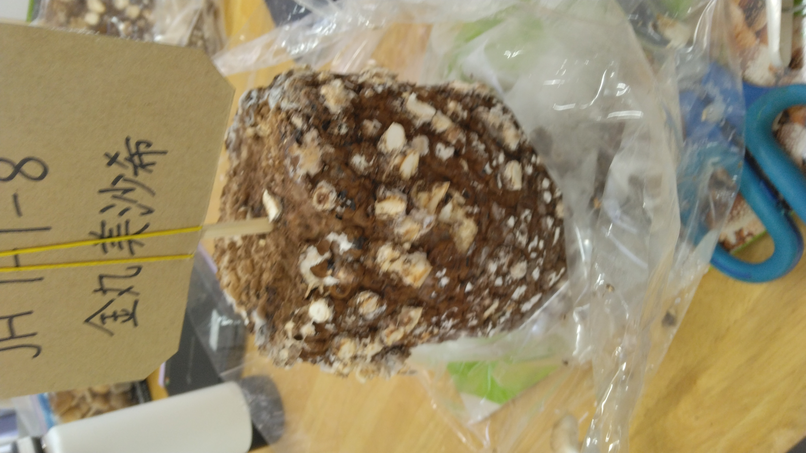

しいたけの栽培
ここでは、去年私がしいたけを栽培したときの様子をお話しようと思います！
一日目
育て始めた日は、最初に中に入っている菌床を出して水に濡らし、
自分の名前を書いた段ボールを刺しました。
水につけることによってしいたけが反応し、生え始めるそうです！
最後に霧吹きで水をかけて終了です。
これからは二日に一回水やりをしていこうと思います。
三日目
三日目になり、水をやりに行きました。
すると、画像では少しわかりにくいのですが、
小さいしいたけがたくさん出ていました！
五日目
五日目になりました。
水をやりに行くと、一昨日とは比べ物にならないくらい大きくなっていました！
思っているよりも成長が早く、とても驚きました。
| 前 | 後 |
| |  |
| 刈り取る前の菌床 | 刈り取ったあとの菌床 |
七日目
今日は収穫の日です！
話によると、今年はとても環境が良かったらしく、
たった一週間でこれほどまで大きくなったそうです。
ハサミを使って、一つ一つ根本を切っていきました。
しいたけ一つ一つのかさが大きく、切るのが難しかったです。
| 調理前 | 調理後 |
| |  |
| 取れたしいたけ | しいたけを使ったスープ |
感想
写真の通り、沢山のしいたけが取れて嬉しかったです。
私は家でしいたけを使いスープを作ったのですが、
とても美味しくて満足でした。
また、家で二回目の栽培に挑戦したのですが、
気候の問題か、できませんでした。
とても楽しかったので、またできたらやろうと思います！